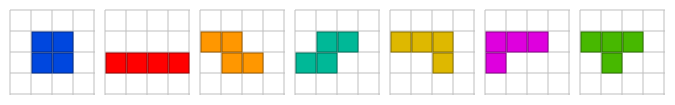
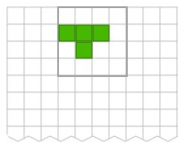
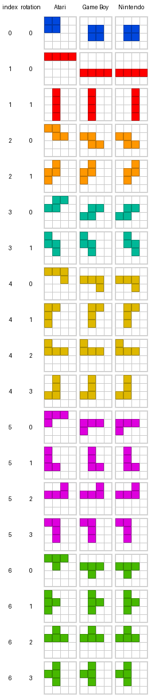

Tengstrand's Blog
The search for simpler code while having fun.
The search for simpler code while having fun.
The focus in this third part of the blog series is to implement an algorithm that computes all valid moves for a piece (Tetromino) in its starting position. We are refining our domain model and improving the readability of parts of the codebase, while continuing to implement the code in Clojure and Python using the component-based Polylith architecture.
Earlier parts:
piece and board components.The resulting source code from this post:
Tetris has been made in several different variants, such as the handheld Game Boy, the Nintendo NES console, and this Atari arcade game, which I played an unhealthy amount of in my younger days at a pool hall that no longer exists!
Each variant behaves slightly differently when it comes to colours, starting positions, rotation behaviour, and so on.
In most Tetris variants, the pieces start in these rotation states (lying flat) before they start falling:
Where on the board the pieces start also varies. For instance, on Nintendo NES and Atari Arcade they start in the fifth x-position, while on Game Boy they start in the fourth:
In these older versions of Tetris, the pieces rotate only counterclockwise, unlike in some newer games where you can rotate both clockwise and counterclockwise.
The following table compares how pieces rotate across the three mentioned variants:
On Atari, pieces are oriented toward the top-left corner (except the vertical I), while on the other two they mostly rotate around their centre.
In our code, we represent a piece as four [x y] cells:
[[0 1] [1 1] [2 1] [1 2]]
This representation is easy for the code to work with, but poorly communicates the shape of a piece to a human.
The main rule is that code should be written to be easy to understand for the people who read and change it (humans and AI agents).
Let us therefore define a piece like this instead:
(def T0 ['---
'xxx
'-x-])
Python:
T0 = [
"---",
"xxx",
"-x-"]
Now we can define all seven pieces and their rotation states for Game Boy (Python code is almost identical):
(ns tetrisanalyzer.piece.settings.game-boy
(:require [tetrisanalyzer.piece.shape :as shape]))
(def O0 ['----
'-xx-
'-xx-
'----])
(def I0 ['----
'----
'xxxx
'----])
(def I1 ['-x--
'-x--
'-x--
'-x--])
(def Z0 ['---
'xx-
'-xx])
(def Z1 ['-x-
'xx-
'x--])
(def S0 ['---
'-xx
'xx-])
(def S1 ['x--
'xx-
'-x-])
(def J0 ['---
'xxx
'--x])
(def J1 ['-xx
'-x-
'-x-])
(def J2 ['x--
'xxx
'---])
(def J3 ['-x-
'-x-
'xx-])
(def L0 ['---
'xxx
'x--])
(def L1 ['-x-
'-x-
'-xx])
(def L2 ['--x
'xxx
'---])
(def L3 ['xx-
'-x-
'-x-])
(def T0 ['---
'xxx
'-x-])
(def T1 ['-x-
'-xx
'-x-])
(def T2 ['-x-
'xxx
'---])
(def T3 ['-x-
'xx-
'-x-])
(def pieces [[O0]
[I0 I1]
[Z0 Z1]
[S0 S1]
[J0 J1 J2 J3]
[L0 L1 L2 L3]
[T0 T1 T2 T3]])
(def shapes (shape/shapes pieces))
The shapes function at the end converts the pieces into the format the code uses:
[;; O
[[[1 1] [2 1] [1 2] [2 2]]]
;; I
[[[0 2] [1 2] [2 2] [3 2]]
[[1 0] [1 1] [1 2] [1 3]]]
;; Z
[[[0 1] [1 1] [1 2] [2 2]]
[[1 0] [0 1] [1 1] [0 2]]]
;; S
[[[1 1] [2 1] [0 2] [1 2]]
[[0 0] [0 1] [1 1] [1 2]]]
;; J
[[[0 1] [1 1] [2 1] [2 2]]
[[1 0] [2 0] [1 1] [1 2]]
[[0 0] [0 1] [1 1] [2 1]]
[[1 0] [1 1] [0 2] [1 2]]]
;; L
[[[0 1] [1 1] [2 1] [0 2]]
[[1 0] [1 1] [1 2] [2 2]]
[[2 0] [0 1] [1 1] [2 1]]
[[0 0] [1 0] [1 1] [1 2]]]
;; T
[[[0 1] [1 1] [2 1] [1 2]]
[[1 0] [1 1] [2 1] [1 2]]
[[1 0] [0 1] [1 1] [2 1]]
[[1 0] [0 1] [1 1] [1 2]]]]
The test for the shape function looks like this:
(ns tetrisanalyzer.piece.shape-test
(:require [clojure.test :refer :all]
[tetrisanalyzer.piece.shape :as shape]))
(deftest converts-a-piece-shape-grid-to-a-vector-of-xy-cells
(is (= [[2 0]
[1 1]
[2 1]
[1 2]]
(shape/shape ['--x-
'-xx-
'-x--
'----]))))
Python:
from tetrisanalyzer.piece.shape import shape
def test_converts_a_piece_shape_grid_to_a_list_of_xy_cells():
assert [[2, 0],
[1, 1],
[2, 1],
[1, 2]] == shape(["--x-",
"-xx-",
"-x--",
"----"]
)
Implementation in Clojure:
(ns tetrisanalyzer.piece.shape)
(defn cell [x character y]
(when (= \x character)
[x y]))
(defn row-cells [y row]
(keep-indexed #(cell %1 %2 y)
(str row)))
(defn shape [piece-grid]
(vec (mapcat identity
(map-indexed row-cells piece-grid))))
(defn shapes [piece-grids]
(mapv #(mapv shape %)
piece-grids))
If you are new to Clojure, here are some explanatory examples of a couple of the functions:
(map-indexed vector ["I" "love" "Tetris"])
;; ([0 "I"] [1 "love"] [2 "Tetris"])
The map-indexed function iterates over "I", "love", and "Tetris", and builds a new list where each element is created by calling vector with the index, which is equivalent to:
(list (vector 0 "I")
(vector 1 "love")
(vector 2 "tetris"))
;; ([0 "I"] [1 "love"] [2 "Tetris"])
The function keep-indexed works in the same way, but only keeps values that aren't nil, hence the use of when:
;; %1 = first argument (index)
;; %2 = second argument (value)
(keep-indexed #(when %2 [%1 %2])
["I" nil "Tetris"])
;; ([0 "I"] [2 "Tetris"])
Implementation in Python:
def shape(piece_grid):
return [
[x, y]
for y, row in enumerate(piece_grid)
for x, ch in enumerate(row)
if ch == "x"]
def shapes(pieces_grids):
return [
[shape(piece_grid) for piece_grid in piece_grids]
for piece_grids in pieces_grids]
Here we use list comprehension to convert the data into [x, y] cells. The enumerate function is equivalent to Clojure’s map-indexed, in that it adds an index (0, 1, 2, …) to each element.
The new code that calculates the valid moves for a piece in its starting position has to live somewhere. We need to be able to move and rotate a piece, and check whether the target position on the board is free.
In object-oriented programming we have several options. We could write piece.set(board), board.set(piece), or maybe move.set(piece, board), while making every effort not to expose the internal representation.
In functional programming, we have more freedom and don't try to hide how we represent our data. The fact that the board is stored as a two-dimensional vector is no secret, and it isn’t just board that can create updated copies of this two-dimensional vector.
Code usually belongs where we expect to find it. We have the function set-piece, which, according to this reasoning, should live in piece, so I moved it from board where I'd put it earlier. The new placements function also goes in piece, since it's about finding valid moves for a piece. Our domain model now looks like this:

Inside each component we list what belongs to its interface (what's public), and the arrow shows that piece calls functions in board.
We split the implementation across the namespaces move, placement, and visit, which we put in the move package:
▾ tetris-polylith
▸ bases
▾ components
▸ board
▾ piece
▾ src
▸ settings
▾ move
move.clj
placement.clj
visit.clj
bitmask.clj
interface.clj
piece.clj
shape.clj
▾ test
▾ move
move_test.clj
placement_test.clj
visit_test.clj
piece_test.clj
shape_test.clj
▸ development
▸ projects
The move-test looks like this:
(ns tetrisanalyzer.piece.move.move-test
(:require [clojure.test :refer :all]
[tetrisanalyzer.piece.piece :as piece]
[tetrisanalyzer.piece.move.move :as move]
[tetrisanalyzer.piece.bitmask :as bitmask]
[tetrisanalyzer.board.interface :as board]
[tetrisanalyzer.piece.settings.atari-arcade :as atari-arcade]))
(def x 2)
(def y 1)
(def rotation 0)
(def S piece/S)
(def shapes atari-arcade/shapes)
(def bitmask (bitmask/rotation-bitmask shapes S))
(def piece (piece/piece S rotation shapes))
(def board (board/board ['xxxxxxxx
'xxx--xxx
'xx--xxxx
'xxxxxxxx]))
(deftest valid-move
(is (= true
(move/valid-move? board x y S rotation shapes))))
(deftest valid-left-move
(is (= [2 1 0]
(move/left board (inc x) y S rotation nil shapes))))
(deftest invalid-left-move
(is (= nil
(move/left board x y S rotation nil shapes))))
(deftest valid-right-move
(is (= [2 1 0]
(move/right board (dec x) y S rotation nil shapes))))
(deftest invalid-right-move
(is (= nil
(move/right board x (dec y) S rotation nil shapes))))
(deftest unoccupied-down-move
(is (= [[2 1 0] nil]
(move/down board x (dec y) S rotation nil shapes))))
(deftest down-move-hits-ground
(is (= [nil [[2 1 0]]]
(move/down board x y S rotation nil shapes))))
(deftest valid-rotation
(is (= [2 1 0]
(move/rotate board x y S (dec rotation) bitmask shapes))))
(deftest invalid-rotation-without-kick
(is (= nil
(move/rotate board (inc x) y S (inc rotation) bitmask shapes))))
(deftest valid-rotation-with-kick
(is (= [2 1 0]
(move/rotate-with-kick board (inc x) y S (inc rotation) bitmask shapes))))
(deftest invalid-move-outside-board
(is (= false
(move/valid-move? board 10 -10 S rotation shapes))))
The first test, valid-move, checks that the S piece:
['-xx
'xx-]
Can be placed at position x=2, y=1, on the board:
['xxxxxxxx
'xxx--xxx
'xx--xxxx
'xxxxxxxx]
Beyond that, we test various valid moves and rotations into the empty area, plus invalid moves outside the board.
In Tetris there's something called kick, or wall kick. When you rotate a piece and that position is occupied on the board, one step left is also tried (x-1). On Nintendo NES this is turned off, while it's enabled in the other two variants we support here. In newer Tetris games, other placements besides x-1 are sometimes tested as well.
The implementation looks like this:
(ns tetrisanalyzer.piece.move.move
(:require [tetrisanalyzer.piece.piece :as piece]))
(defn cell [board x y [cx cy]]
(or (get-in board [(+ y cy) (+ x cx)])
piece/X))
(defn valid-move? [board x y p rotation shapes]
(every? zero?
(map #(cell board x y %)
(piece/piece p rotation shapes))))
(defn left [board x y p rotation _ shapes]
(when (valid-move? board (dec x) y p rotation shapes)
[(dec x) y rotation]))
(defn right [board x y p rotation _ shapes]
(when (valid-move? board (inc x) y p rotation shapes)
[(inc x) y rotation]))
(defn down
"Returns [down-move placement] where:
- down-move: next move when moving down or nil if blocked
- placement: final placement if blocked, or nil if can move down"
[board x y p rotation _ shapes]
(if (valid-move? board x (inc y) p rotation shapes)
[[x (inc y) rotation] nil]
[nil [[x y rotation]]]))
(defn rotate [board x y p rotation bitmask shapes]
(let [new-rotation (bit-and (inc rotation) bitmask)]
(when (valid-move? board x y p new-rotation shapes)
[x y new-rotation])))
(defn rotate-with-kick [board x y p rotation bitmask shapes]
(or (rotate board x y p rotation bitmask shapes)
(rotate board (dec x) y p rotation bitmask shapes)))
(defn rotation-fn [rotation-kick?]
(if rotation-kick?
rotate-with-kick
rotate))
The functions are fairly straightforward, so let us instead look at the code that helps us keep track of which moves have already been visited:
(ns tetrisanalyzer.piece.move.visit)
(defn visited? [visited-moves x y rotation]
(if-let [visited-rotations (get-in visited-moves [y x])]
(not (zero? (bit-and visited-rotations
(bit-shift-left 1 rotation))))
true)) ;; Cells outside the board are treated as visited
(defn visit [visited-moves x y rotation]
(assoc-in visited-moves [y x] (bit-or (get-in visited-moves [y x])
(bit-shift-left 1 rotation))))
Calling the standard bit-shift-left function returns a set bit in one of the four lowest bits:
| rotation | bit |
|---|---|
| 0 | 0001 |
| 1 | 0010 |
| 2 | 0100 |
| 3 | 1000 |
These "flags" are used to mark that we've visited a given [x y rotation] move on the board. Note that we pass a "visited board" (visited-moves) into visit and get back a copy where the [x y] cell has a bit set for the given rotation. This “copying” is very fast and memory-efficient, see “structural sharing” under Data Structures.
The tests look like the following:
(ns tetrisanalyzer.piece.move.visit-test
(:require [clojure.test :refer :all]
[tetrisanalyzer.piece.move.visit :as visit]))
(def x 2)
(def y 1)
(def rotation 3)
(def unvisited [[0 0 0 0]
[0 0 0 0]])
(deftest move-is-not-visited
(is (= false
(visit/visited? unvisited x y rotation))))
(deftest move-is-visited
(let [visited (visit/visit unvisited x y rotation)]
(is (= true
(visit/visited? visited x y rotation)))))
Python:
from tetrisanalyzer.piece.move.visit import is_visited, visit
X = 2
Y = 1
ROTATION = 3
UNVISITED = [
[0, 0, 0, 0],
[0, 0, 0, 0]]
def test_move_is_not_visited():
assert is_visited(UNVISITED, X, Y, ROTATION) is False
def test_move_is_visited():
visited = [row[:] for row in UNVISITED]
visit(visited, X, Y, ROTATION)
assert is_visited(visited, X, Y, ROTATION) is True
We have now laid the groundwork to implement the placements function that computes all valid moves for a piece in its starting position.
We start with the test:
(ns tetrisanalyzer.piece.move.placement-test
(:require [clojure.test :refer :all]
[tetrisanalyzer.piece.piece :as piece]
[tetrisanalyzer.piece.move.placement :as placement]
[tetrisanalyzer.piece.settings.atari-arcade :as atari-arcade]))
(def start-x 2)
(def sorter (juxt second first last))
(def board [[0 0 0 0 0 0]
[0 0 1 1 0 0]
[0 0 1 0 0 1]
[0 0 1 1 1 1]])
(def shapes atari-arcade/shapes)
;; Start position of the J piece:
;; --JJJ-
;; --xxJ-
;; --x--x
;; --xxxx
(deftest placements--without-rotation-kick
(is (= [[2 0 0]
[3 0 0]]
(sort-by sorter (placement/placements board piece/J start-x false shapes)))))
;; With rotation kick, checking if x-1 fits:
;; -JJ---
;; -Jxx--
;; -Jx--x
;; --xxxx
(deftest placements--with-rotation-kick
(is (= [[1 0 1]
[2 0 0]
[3 0 0]
[0 1 1]]
(sort-by sorter (placement/placements board piece/J start-x true shapes)))))
This tests that we get back the valid [x y rotation] positions where a piece can be placed on the board from its starting position.
The implementation:
(ns tetrisanalyzer.piece.move.placement
(:require [tetrisanalyzer.piece.move.move :as move]
[tetrisanalyzer.piece.move.visit :as visit]
[tetrisanalyzer.board.interface :as board]
[tetrisanalyzer.piece.bitmask :as bitmask]))
(defn ->placements [board x y p rotation bitmask valid-moves visited-moves rotation-fn shapes]
(loop [next-moves (list [x y rotation])
placements []
valid-moves valid-moves
visited-moves visited-moves]
(if-let [[x y rotation] (first next-moves)]
(let [next-moves (rest next-moves)]
(if (visit/visited? visited-moves x y rotation)
(recur next-moves placements valid-moves visited-moves)
(let [[down placement] (move/down board x y p rotation bitmask shapes)
moves (keep #(% board x y p rotation bitmask shapes)
[move/left
move/right
rotation-fn
(constantly down)])]
(recur (into next-moves moves)
(concat placements placement)
(conj valid-moves [x y rotation])
(visit/visit visited-moves x y rotation)))))
placements)))
(defn placements [board p x kick? shapes]
(let [y 0
rotation 0
bitmask (bitmask/rotation-bitmask shapes p)
visited-moves (board/empty-board board)
rotation-fn (move/rotation-fn kick?)]
(if (move/valid-move? board x y p rotation shapes)
(->placements board x y p rotation bitmask [] visited-moves rotation-fn shapes)
[])))
Let us walk through the following section in ->placements:
(loop [next-moves (list [x y rotation])
placements []
valid-moves valid-moves
visited-moves visited-moves]
These four lines initialise the data we're looping over: next-moves is the list of moves we need to process (it grows and shrinks as we go), and placements accumulates valid moves.
Since Clojure doesn’t support tail recursion, we use loop instead, to avoid stack overflow on boards larger than 10×20.
(if-let [[x y rotation] (first next-moves)]
Retrieves the next move from next-moves and continues with the code immediately after, or returns placements (the last line in the function, representing all valid moves) if next-moves is empty.
(let [next-moves (rest next-moves)]
Drops the first element from next-moves, the one we just picked.
(if (visit/visited? visited-moves x y rotation)
If we've already visited this move, continue with:
(recur next-moves placements valid-moves visited-moves)
Which continues our search for valid moves (the line after (loop [...]) by moving on to the next move to evaluate.
Otherwise, if the move hasn't been visited, we do:
(let [[down placement] (move/down board x y p rotation bitmask shapes)
...]
This sets down to the next downward move (if free) or placement if we can't move down, which happens when we hit the bottom or when part of the "stack" is in the way.
For these lines:
(keep #(% board x y p rotation bitmask shapes)
[move/left
move/right
rotation-fn
(constantly down)])
The % gets replaced with each function in the vector, which is equivalent to:
[(move/left board x y p rotation bitmask shapes)
(move/right board x y p rotation bitmask shapes)
(rotation-fn board x y p rotation bitmask shapes)
(down board x y p rotation bitmask shapes)]
These function calls generate all possible moves (including rotations), returning [x y rotation] for positions that are free on the board, or nil if occupied. The keep function filters out nil values, leaving only valid moves in moves.
Finally we execute:
(recur (into next-moves moves)
(concat placements placement)
(conj valid-moves [x y rotation])
(visit/visit visited-moves x y rotation))
Which calls loop again with:
next-moves updated with any new movesplacements updated with any valid placementvalid-moves updated with the current movevisited-moves with the current move marked as visitedThis keeps going until next-moves is empty, and then we return placements.
The function that kicks everything off and returns valid moves for a piece in its starting position:
(defn placements [board p x kick? shapes]
(let [y 0
rotation 0
bitmask (bitmask/rotation-bitmask shapes p)
visited-moves (board/empty-board board)
rotation-fn (move/rotation-fn kick?)]
(if (move/valid-move? board x y p rotation shapes)
(->placements board x y p rotation bitmask [] visited-moves rotation-fn shapes)
[])))
board: a two-dimensional vector representing the board, usually 10x20.p: piece index (0, 1, 2, 3, 4, 5, or 6).x: which column the 4x4 grid starts in (where the piece sits). First column is 0.y: set to 0 (top row for the 4x4 grid).rotation: set to 0 (starting rotation).bitmask: used when iterating over rotations so that it wraps back to 0 after reaching the maximum number of rotations it can perform.visited-moves: has the same structure as a board, a two-dimensional array, usually 10x20.rotation-fn: returns the right rotation function depending on whether kick is enabled. Also tries position x-1 if kick? is true.shapes: the shapes for all pieces and their rotation states, stored as [x y] cells.(if (move/valid-move? board x y p rotation shapes): we need to check whether the initial position is free; if not, return an empty vector.(->placements board x y p rotation bitmask [] visited-moves rotation-fn shapes) computes the valid moves.Implementation in Python:
from collections import deque
from tetrisanalyzer import board as board_ifc
from tetrisanalyzer.piece import piece
from tetrisanalyzer.piece.bitmask import rotation_bitmask
from tetrisanalyzer.piece.move import move
from tetrisanalyzer.piece.move import visit
def _placements(board, x, y, p, rotation, bitmask, valid_moves, visited_moves, rotation_move_fn, shapes):
next_moves = deque([[x, y, rotation]])
valid_placements = []
while next_moves:
x, y, rotation = next_moves.popleft()
if visit.is_visited(visited_moves, x, y, rotation):
continue
down_move, placement = move.down(board, x, y, p, rotation, bitmask, shapes)
moves = [
move.left(board, x, y, p, rotation, bitmask, shapes),
move.right(board, x, y, p, rotation, bitmask, shapes),
rotation_move_fn(board, x, y, p, rotation, bitmask, shapes),
down_move]
moves = [m for m in moves if m is not None]
next_moves.extend(moves)
if placement is not None:
valid_placements.extend(placement)
valid_moves.append([x, y, rotation])
visit.visit(visited_moves, x, y, rotation)
return valid_placements
def placements(board, p, start_x, kick, shapes):
y = 0
rotation = 0
bitmask = rotation_bitmask(shapes, p)
visited_moves = board_ifc.empty_board(board_ifc.width(board), board_ifc.height(board))
rotation_move_fn = move.rotation_fn(kick)
if not move.is_valid_move(board, start_x, y, p, rotation, shapes):
return []
return _placements(board, start_x, y, p, rotation, bitmask, [], visited_moves, rotation_move_fn, shapes)
The code follows the same algorithm as in Clojure. We use deque because it's slightly faster than a list when performing both popleft and extend.
Finally, we run our tests:
$> cd ~/source/tetrisanalyzer/langs/clojure/tetris-polylith
$> poly test :dev
Projects to run tests from: development
Running tests for the development project using test runner: Polylith built-in clojure.test runner...
Running tests from the development project, including 2 bricks: board, piece
Testing tetrisanalyzer.board.core-test
Ran 1 tests containing 1 assertions.
0 failures, 0 errors.
Test results: 1 passes, 0 failures, 0 errors.
Testing tetrisanalyzer.board.clear-rows-test
Ran 1 tests containing 1 assertions.
0 failures, 0 errors.
Test results: 1 passes, 0 failures, 0 errors.
Testing tetrisanalyzer.board.grid-test
Ran 2 tests containing 2 assertions.
0 failures, 0 errors.
Test results: 2 passes, 0 failures, 0 errors.
Testing tetrisanalyzer.piece.shape-test
Ran 1 tests containing 1 assertions.
0 failures, 0 errors.
Test results: 1 passes, 0 failures, 0 errors.
Testing tetrisanalyzer.piece.move.placement-test
Ran 2 tests containing 2 assertions.
0 failures, 0 errors.
Test results: 2 passes, 0 failures, 0 errors.
Testing tetrisanalyzer.piece.move.move-test
Ran 11 tests containing 11 assertions.
0 failures, 0 errors.
Test results: 11 passes, 0 failures, 0 errors.
Testing tetrisanalyzer.piece.move.visit-test
Ran 2 tests containing 2 assertions.
0 failures, 0 errors.
Test results: 2 passes, 0 failures, 0 errors.
Testing tetrisanalyzer.piece.piece-test
Ran 1 tests containing 1 assertions.
0 failures, 0 errors.
Test results: 1 passes, 0 failures, 0 errors.
Execution time: 0 seconds
Python:
$> cd ~/source/tetrisanalyzer/langs/python/tetris-polylith-uv
$> uv run pytest
======================================================================================================= test session starts ========================================================================================================
platform darwin -- Python 3.13.11, pytest-9.0.2, pluggy-1.6.0
rootdir: /Users/tengstrand/source/tetrisanalyzer/langs/python/tetris-polylith-uv
configfile: pyproject.toml
collected 21 items
test/components/tetrisanalyzer/board/test_clear_rows.py . [ 4%]
test/components/tetrisanalyzer/board/test_core.py .. [ 14%]
test/components/tetrisanalyzer/board/test_grid.py .. [ 23%]
test/components/tetrisanalyzer/piece/move/test_move.py ........... [ 76%]
test/components/tetrisanalyzer/piece/move/test_placement.py .. [ 85%]
test/components/tetrisanalyzer/piece/move/test_visit.py .. [ 95%]
test/components/tetrisanalyzer/piece/test_shape.py . [100%]
======================================================================================================== 21 passed in 0.02s ========================================================================================================
Nice, all tests passed!
In this third post, I took on the not entirely trivial task of computing all valid moves for a piece in its starting position.
I avoided implementing it as a recursive algorithm, since that would limit how large our boards can get.
We reminded ourselves that code should live where we expect to find it.
We also took the opportunity to make the code easier to work with, by specifying pieces in a more readable way, and with that change we could easily support three different Tetris variants.
Hope you had just as much fun as I did 😃
Happy Coding!
Published: 2026-02-17